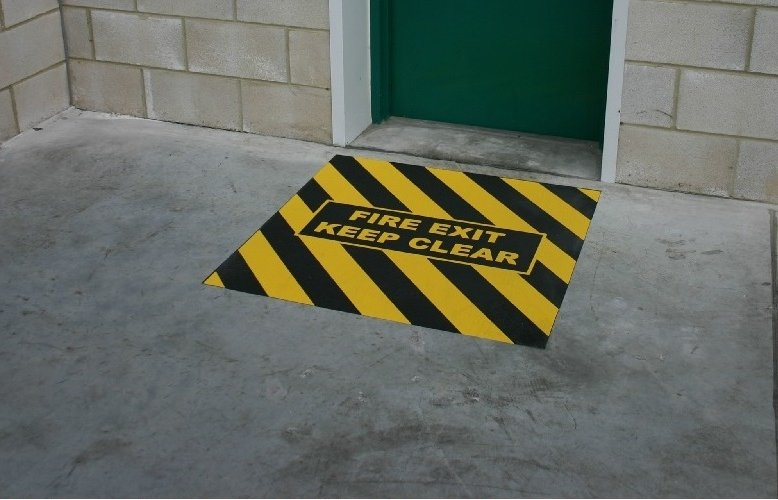
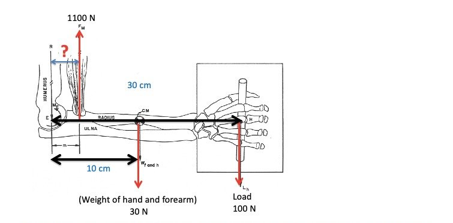

Her soruyu sadece bir kere görebilirsiniz. Bu sebeple cevabınızdan emin olmadan soruyu geçmeyiniz. Sonradan değiştirme şansınız olmayacak. (Her soru 4 Puan)
Kaynak: öğrencilerin ekran fotoğrafları (25.11.2020). Ekranda sınav tarihi görünmediği için tarih dosya tarihinden alındı.
Şıklar öğrenciye göre karışık sıradadır; sorular metne göre tekilleştirildi, konu akışına göre 1–25 numaralandı (ekrandaki numaralar farklı). Şık harfleri en net ekran görüntüsündeki sıraya göredir; işaretli şık o görüntüdeki işarettir.
Cevap listesindeki (FİNAL.docx) harfler kendi şık sırasına göredir; burada metne göre eşlendi.
Cevap listesinde 'Stairways must be installed at no more than ...' sorusu da var ama ekran fotoğraflarında bulunmadığı için bu sayfada yok. 17. sorunun iki varyantı var (açıklamaya bakınız).
Bir şıkkı işaretlediğinizde doğru cevap görünür. Seçiminiz bu tarayıcıda saklanır.
0 / 25 cevaplandı
1. If there is a fire and you want to stop it, which of the following is not one of your options?
Doğru cevap: E · Öğrenci cevap listesine göre
2. Why is it important to know the different classes of fire?
Doğru cevap: A · Öğrenci cevap listesine göre
3. A fire of plastic bags is classified (in the EU classification system) as: __________?
Doğru cevap: E · Öğrenci cevap listesine göre
4. Which of the following is not a good match?
Doğru cevap: E · Öğrenci cevap listesine göre · Elektrik yangınında köpük (iletken) kullanılmaz.
5. If you design a fire alarm system to alert people when there is a fire, which type of safety sign(s) should you use?
Doğru cevap: A · Öğrenci cevap listesine göre
6. Which of the following is a true statement?
Doğru cevap: D · Öğrenci cevap listesine göre
7. When there is an emergency we should follow the exit route to gather at the assembly point. We often use hallways (corridor) to go to the assembly point. How do we call “the hallway” in safety?
Doğru cevap: B · Öğrenci cevap listesine göre
8. In the picture, you see a fire exit door and a "keep clear" text on the floor. Is this a proper floor marking?

Doğru cevap: D · Öğrenci cevap listesine göre · Şekil: zemin işareti (sarı-siyah) ve yeşil acil çıkış kapısı. Cevap listesine göre acil çıkış için yeşil-beyaz piktogram gerekir.
9. Which of the following is a false statement in terms of the Emergency Action Plan (EPA)?
Doğru cevap: C · Öğrenci cevap listesine göre
10. If we want our workers to wash their hands before they enter the lunchroom, what kind of safety sign should we use?
Doğru cevap: A · Çözüm (kaynakta işaret yok, doğrulanmamış) · Zorunluluk (mavi daire, beyaz piktogram) işareti.
11. Which of the following is an example of an unsafe condition?
Doğru cevap: E · Öğrenci cevap listesine göre · Diğer şıklar güvensiz davranıştır.
12. Which of the following is not an example of Murphy's Law?
Doğru cevap: A · Öğrenci cevap listesine göre
13. Ayse comes very tiredly to her job every Wednesday since she plays tennis on Tuesday evenings. In her workplace, a janitor cleans floors every morning. If someone does not wear non-slippery workshoes, there is a high possibility that he or she can slip and fall. Last Wednesday morning, Ayse came to the factory and did not want to wear her non-slippery workshoes since they are uncomfortable. None of the supervisors realized that she did not wear her workshoes. When she stepped on the wet floor, she felt down and injured her head. Which of the following theory/model can explain this accident?
Doğru cevap: D · Öğrenci cevap listesine göre
14. A natural gas detector in your home can detect if there is any propane gas leak. It will alert you if there is any gas leak. So, it is an example for __________.
Doğru cevap: B · Öğrenci cevap listesine göre · emin değiliz · Görüntü bulanıktı; soru metninin sonu yakın çekimde kesikti, diğer kopyadan tamamlandı. Cevap listesi Fail-operational diyor; Fail-active de savunulabilir (alarm veren sistem).
15. Which of the following is a true statement?
Doğru cevap: A · Öğrenci cevap listesine göre · Öğrenci C işaretlemiş; güvenlik faktörü = taşıma kapasitesi / beklenen yük olduğundan C ters yazılmış, ayrıca uçaklarda güvenlik faktörü köprülerden düşüktür. Cevap listesi A.
16. Rotating workers to minimize their exposure to excessive noise is an example of administrative control.
Doğru cevap: D · Öğrenci cevap listesine göre
17. Based on the hierarchy of vibration control, which of the following is more effective compared to others?
Doğru cevap: A · İşaretli cevapla çelişiyor, gözden geçirin · Bu varyantta ikame (substitution) şıkkı yok; kontrol hiyerarşisine göre mühendislik kontrolü (yağlama/bakım) idari önlem ve KKD'den üstündür. Cevap listesi (C = eğitim) ile çelişiyor. Başka bir varyantta ("Hint: Consider the hierarchy of control") şıklar: Lubrication / Decreasing exposure with short work schedules / Training workers about vibration / Substitution the vibrating machine with a safer one / Using anti-vibration gloves; orada cevap ikamedir.
18. Which of the following is a true statement?
Doğru cevap: B · Öğrenci cevap listesine göre
19. What does the table tell us?
Task-specific energy expenditure for frequent lifting (kcal/min)
Lift Location
< 1h
1-2 h
2-8 h
V ≤ 75 cm
4.7
3.7
3.1
V > 75 cm
3.3
2.7
2.2
Doğru cevap: B · Öğrenci cevap listesine göre
20. If we measure the required energy level of a task and then compare it with other tasks to understand the difficulty level of the task, which manual material handling criterion is executed?
Doğru cevap: D · Öğrenci cevap listesine göre · Öğrenci psikofiziksel kriteri işaretlemiş; enerji harcaması fizyolojik kriterdir.
21. The Snook tables and work physiology are two different manual material handling assessment methods. Which of the following is a true statement about these methods?
Doğru cevap: C · Öğrenci cevap listesine göre · emin değiliz · Cevap listesi 'A (Emin)' = work physiology is the only method to understand the difficulty level (burada C). D şıkkı da savunulabilir.
22. Based on the recommended weight limit (RWL) formula, which of the following is a false statement?
Doğru cevap: B · Öğrenci cevap listesine göre · VM = 1 − 0,0075·|V − 75|: V = 25 → 0,625; V = 50 → 0,8125. Yani 50 cm daha iyi, ifade yanlış.
23. If the lifting index suggests to us that a specific lifting task is not acceptable and we know that the load lifted is 12 kg, what is the recommended weight limit (RWL) for this task?
Doğru cevap: A · Öğrenci cevap listesine göre · LI = yük / RWL > 1 ise RWL < 12 kg.
24. Which of the following is a false statement?
Doğru cevap: B · Öğrenci cevap listesine göre
25. Based on the figure given, the load is 100 N, the weight of hand and forearm is 30 N, and the required force by the biceps muscle to lift the load is 1100 N. What is the lever arm distance from the elbow joint and the insertion point of the biceps muscle?

Doğru cevap: B · Öğrenci cevap listesine göre · 1100·d = 100·30 + 30·10 = 3300 → d = 3 cm.